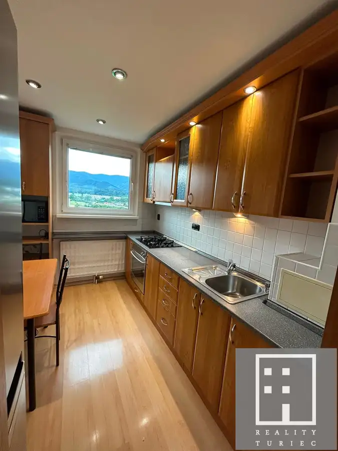
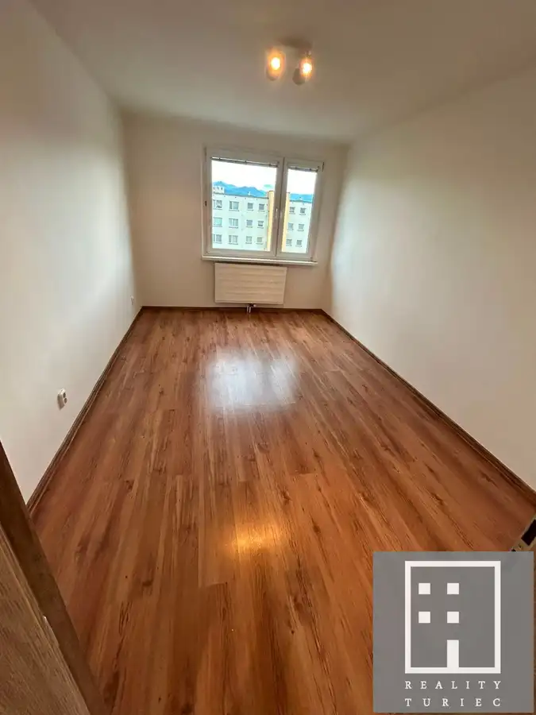
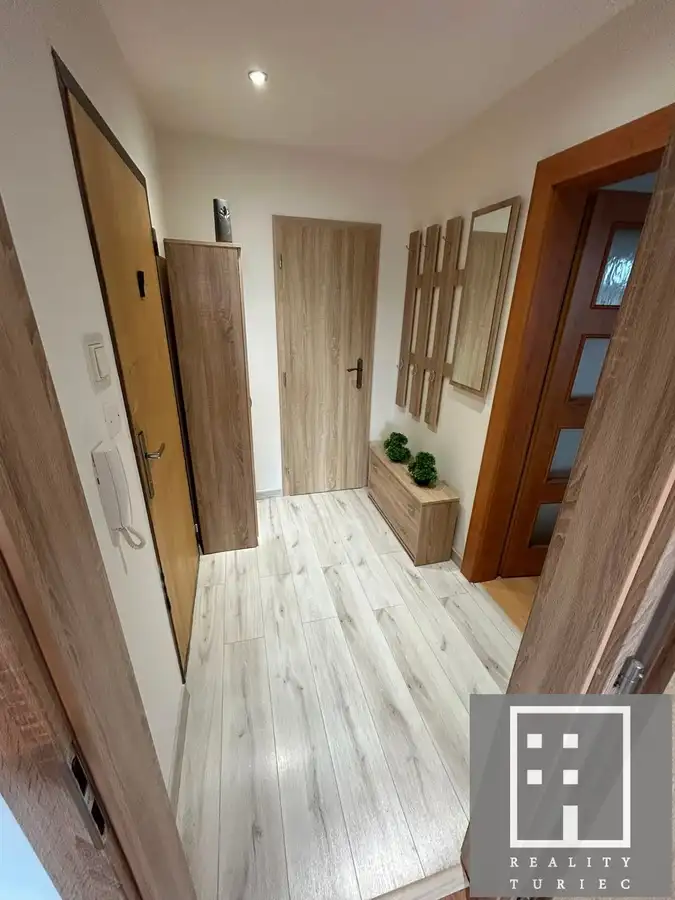
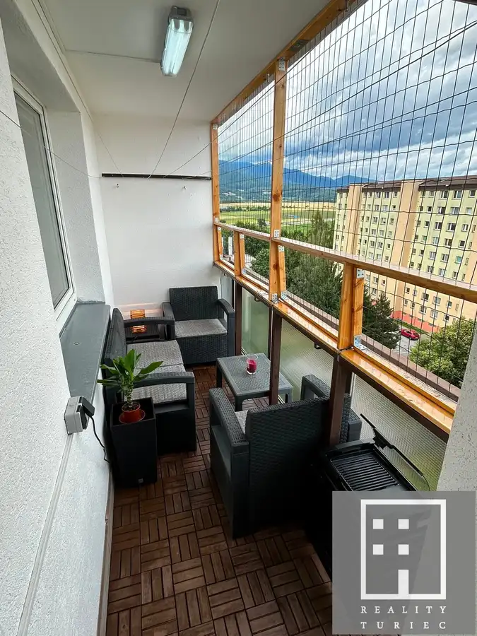
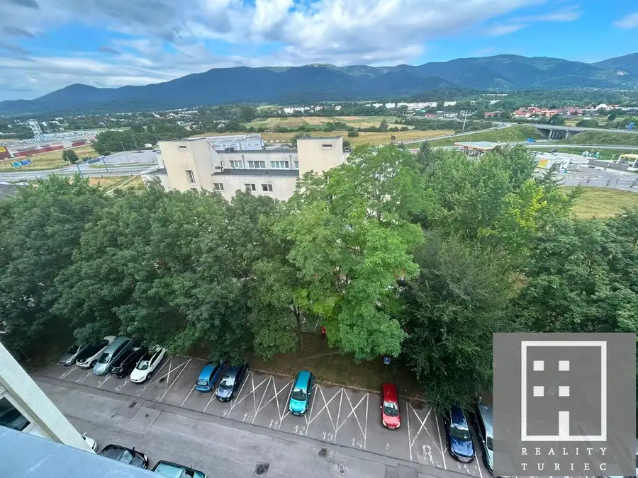

4-izbový byt typu Bauring s loggiou | Martin – Košúty 2
Martin






- Dispozícia4-izbový
- Plocha85 m²
- Poschodie8. z 8
- StavKompletná rekonštrukcia
- VlastníctvoOsobné
- Energetická triedaB
O nehnuteľnosti
Reality Turiec ponúka na predaj priestranný 4-izbový byt typu Bauring v obľúbenej lokalite Košúty 2 v Martine.Ak hľadáte byt, ktorý ponúka veľkorysú výmeru, praktickú dispozíciu, dostatok úložného priestoru a kompletnú občiansku vybavenosť na dosah, táto nehnuteľnosť môže byť práve pre Vás. ZÁKLADNÉ INFORMÁCIE•Výmera bytu: 85 m² vrátane murovanej pivnice•Loggia: 5,5 m²•Poschodie: 8. poschodie z 8•Výťah: áno•Orientácia: východ – obývačka, detská izba, pracovňa; západ – spálňa, kuchyňa a kúpeľňa•Na poschodí: iba 2 byty DISPOZÍCIA, KTORÁ DÁVA ZMYSELByt ponúka veľmi príjemné a praktické dispozičné riešenie.Po vstupe Vás privíta priestranná vstupná chodba, z ktorej sa dostanete do pracovne, šatníka a obývacej izby.Obývacia izba je prepojená s kuchyňou, čím vzniká vzdušný spoločenský priestor vhodný na každodenné fungovanie aj posedenia s rodinou či priateľmi.Z menšej chodbičky sa následne vstupuje do spálne, detskej izby, samostatného WC a kúpeľne s oknom.Praktickým bonusom je samostatný šatník a pracovňa, ktoré oceníte pri rodinnom bývaní aj pri práci z domu. STAV A VYBAVENIEByt prešiel rekonštrukciou a predáva sa takmer kompletne zariadený.Nový majiteľ tak môže bývať prakticky bez nutnosti okamžitých veľkých investícií. BYTOVÝ DOMBytový dom má za sebou obnovu, ktorá zahŕňala:•zateplenie bytového domu,•novú pozinkovanú strechu,•výmenu stúpačiek,•plastové okná.Parkovanie je zabezpečené formou verejných parkovacích miest v okolí bytového domu. KOŠÚTY 2 – VŠETKO DÔLEŽITÉ NA DOSAHJednou z veľkých výhod tejto nehnuteľnosti je jej poloha.V pešej dostupnosti sa nachádza Kaufland, Lidl, OC Campo di Martin, Jednota, zdravotné stredisko, základná a materská škola aj zastávky MHD.Lokalita zároveň ponúka dobrú dostupnosť do centra Martina, ako aj jednoduché napojenie smerom na Žilinu a Sučany. ODPORÚČANIE MAKLÉRATento byt odporúčam najmä rodinám, ktoré hľadajú priestranné 4-izbové bývanie s praktickou dispozíciou a kompletnou občianskou vybavenosťou v bezprostrednom okolí.Veľkým benefitom je výmera takmer 85 m², loggia, pracovňa, šatník, rekonštrukcia a výborná dostupnosť služieb. Byt sa nachádza na najvyššom poschodí, pričom na poschodí sú iba dva byty. CENA A SERVIS REALITNEJ KANCELÁRIECena nehnuteľnosti zahŕňa kompletný servis spojený s predajom, vrátane:•právneho servisu a poradenstva,•vypracovania zmluvnej dokumentácie,•zabezpečenia prevodu nehnuteľnosti na nového majiteľa,•bezplatného finančného poradenstva v súvislosti s kúpou nehnuteľnosti.K bytu je k dispozícii aktuálny znalecký posudok.Zaujala Vás táto ponuka? Radi Vám poskytneme bližšie informácie a dohodneme si termín obhliadky.Neváhajte nás kontaktovať.Reality TuriecIng. Eva Korimová ekorimova@reality-turiec.sk +421 915 800 101 www.reality-turiec.sk
Parametre
- Cena vrátane energií
- Nie
- Druh
- 4 izbový byt
- Dátum zverejnenia
- 01. 09. 2026
- Energetický certifikát budovy
- B
- Orientácia
- Západná, Východná
- Podlažie
- 8
- Počet izieb / miestností
- 4
- Počet nadzemných podlaží
- 8
- Rok výstavby
- 1990
- Stav nehnuteľnosti
- Kompletná rekonštrukcia
- Typ
- Predaj
- Typ konštrukcie
- Panelová
- Vlastníctvo
- Osobné
- Vybavenie
- Špajza
- Úžitková plocha
- 85 m²
Kde to je


Mohlo by Vás zaujímať
 PozemokNové
51 000 €Predaj stavebného pozemku v obci Belá-Dulice pri Martine
Belá-Dulice
933 m²
PozemokNové
51 000 €Predaj stavebného pozemku v obci Belá-Dulice pri Martine
Belá-Dulice
933 m²
 DomNové
Cena na vyžádáníDom s dušou, ktorý si pretvoríte na vysnívané rodinné bývanie v štýle anglického vidieka
Belá-Dulice
400 m²
DomNové
Cena na vyžádáníDom s dušou, ktorý si pretvoríte na vysnívané rodinné bývanie v štýle anglického vidieka
Belá-Dulice
400 m²
 DomRezervované
329 900 €Novostavba rodinného domu v rustikálnom štýle s krásnou záhradou Martin-Turčianske Kľačany
Turčianske Kľačany
154 m²
DomRezervované
329 900 €Novostavba rodinného domu v rustikálnom štýle s krásnou záhradou Martin-Turčianske Kľačany
Turčianske Kľačany
154 m²